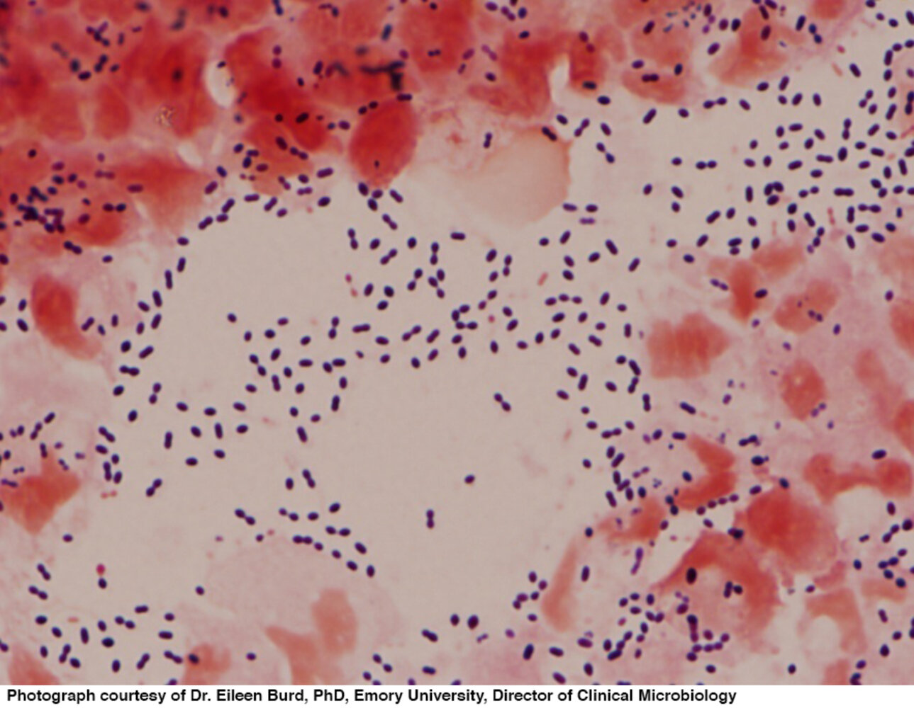
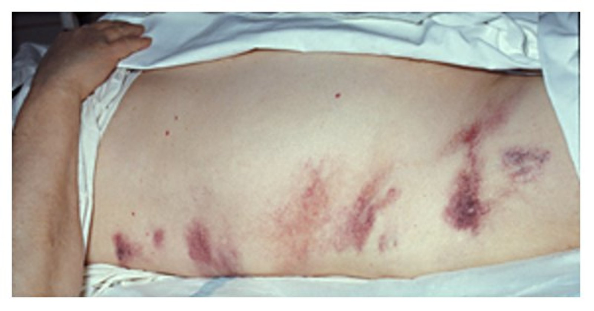

Pediatrics - All Cases Image Review
Hover/click images to inspect. Primary thumb (boxed in blue) is what shows in the case card + PDF.
ILLUSTRATION
IMAGING
PHOTO
OTHER
NEW v2 / Wikimedia
Case 1: Cephalohematoma Sources: AMBOSS-v1 · Terms: (n/a) · 4 images
PHOTO 115KB · AMBOSS-v1
PHOTO 97KB · AMBOSS-v1
IMAGING NEW 42KB · RADIOPAEDIA
IMAGING NEW 25KB · RADIOPAEDIA Case 2: Down syndrome Sources: AMBOSS-v1 · Terms: Down syndrome · 3 images
IMAGING 156KB · AMBOSS-v1
IMAGING 124KB · AMBOSS-v1
PHOTO 85KB · AMBOSS-v1 Case 3: Preseptal cellulitis Sources: AMBOSS-v1 · Terms: preseptal cellulitis · 3 images
IMAGING 97KB · AMBOSS-v1
IMAGING 186KB · AMBOSS-v1
PHOTO 184KB · AMBOSS-v1 Case 4: Respiratory distress syndrome Sources: AMBOSS-v1 · Terms: neonatal respiratory distress syndrome · 2 images
IMAGING 193KB · AMBOSS-v1
IMAGING 103KB · AMBOSS-v1 Case 5: Acute lymphoblastic leukemia Sources: AMBOSS-v1 · Terms: acute lymphoblastic leukemia · 2 images
IMAGING 81KB · AMBOSS-v1
PHOTO 145KB · AMBOSS-v1 Case 6: Sickle cell disease Sources: AMBOSS-v1 · Terms: sickle cell disease · 3 images
IMAGING 174KB · AMBOSS-v1
IMAGING 198KB · AMBOSS-v1
PHOTO 208KB · AMBOSS-v1 Case 7: Acute chest syndrome Sources: AMBOSS-v1 · Terms: acute chest syndrome · 2 images
IMAGING 83KB · AMBOSS-v1
IMAGING 79KB · AMBOSS-v1 Case 8: Beta thalassemia major Sources: AMBOSS-v1 + AMBOSS · Terms: beta thalassemia major | beta thalassemia facies | thalassemia frontal bossing | thalassemia child | thalassemia major · 5 images
IMAGING 95KB · AMBOSS-v1
IMAGING NEW 95KB · AMBOSS
PHOTO NEW 42KB · AMBOSS
PHOTO NEW 29KB · AMBOSS
PHOTO NEW 63KB · AMBOSS Case 9: Iron deficiency anemia Sources: AMBOSS-v1 · Terms: iron deficiency anemia · 5 images
IMAGING 188KB · AMBOSS-v1
IMAGING 231KB · AMBOSS-v1
PHOTO 87KB · AMBOSS-v1
PHOTO 79KB · AMBOSS-v1
PHOTO 61KB · AMBOSS-v1 Case 10: Nephrotic syndrome Sources: AMBOSS-v1 + AMBOSS · Terms: nephrotic syndrome | nephrotic syndrome child | periorbital edema child | nephrotic edema | facial edema pediatric · 7 images
IMAGING 29KB · AMBOSS-v1
PHOTO NEW 172KB · AMBOSS
PHOTO NEW 112KB · AMBOSS
PHOTO NEW 150KB · AMBOSS
PHOTO NEW 176KB · AMBOSS
IMAGING NEW 113KB · AMBOSS
IMAGING NEW 131KB · AMBOSS Case 11: Meningococcemia Sources: AMBOSS-v1 + AMBOSS · Terms: meningococcemia | purpura fulminans | meningococcal rash | petechial rash meningitis | waterhouse-friderichsen | meningococcemia skin · 7 images
IMAGING 152KB · AMBOSS-v1
PHOTO NEW 189KB · AMBOSS
PHOTO NEW 163KB · AMBOSS
PHOTO NEW 104KB · AMBOSS
PHOTO NEW 340KB · AMBOSS
PHOTO NEW 146KB · AMBOSS
PHOTO NEW 219KB · AMBOSS Case 12: Henoch-Schonlein purpura Sources: AMBOSS-v1 · Terms: henoch-schonlein purpura · 4 images
IMAGING 117KB · AMBOSS-v1
PHOTO 158KB · AMBOSS-v1
PHOTO 38KB · AMBOSS-v1
PHOTO 299KB · AMBOSS-v1 Case 13: Varicella Sources: AMBOSS-v1 · Terms: varicella · 5 images
IMAGING 141KB · AMBOSS-v1
IMAGING 114KB · AMBOSS-v1
PHOTO 148KB · AMBOSS-v1
PHOTO 205KB · AMBOSS-v1
PHOTO 253KB · AMBOSS-v1 Case 14: Measles Sources: AMBOSS-v1 · Terms: measles · 4 images
IMAGING 151KB · AMBOSS-v1
PHOTO 186KB · AMBOSS-v1
PHOTO 91KB · AMBOSS-v1
PHOTO 146KB · AMBOSS-v1 Case 15: Roseola Sources: AMBOSS-v1 · Terms: roseola infantum · 3 images
IMAGING 128KB · AMBOSS-v1
PHOTO 173KB · AMBOSS-v1
PHOTO 177KB · AMBOSS-v1 Case 16: Hand foot mouth disease Sources: AMBOSS-v1 · Terms: hand foot and mouth disease · 3 images
PHOTO 133KB · AMBOSS-v1
PHOTO 187KB · AMBOSS-v1
PHOTO 128KB · AMBOSS-v1 Case 17: Scarlet fever Sources: AMBOSS-v1 · Terms: scarlet fever · 4 images
IMAGING 166KB · AMBOSS-v1
PHOTO 108KB · AMBOSS-v1
PHOTO 109KB · AMBOSS-v1
PHOTO 170KB · AMBOSS-v1 Case 18: Kawasaki disease Sources: AMBOSS-v1 · Terms: kawasaki disease · 4 images
IMAGING 45KB · AMBOSS-v1
PHOTO 202KB · AMBOSS-v1
PHOTO 147KB · AMBOSS-v1
PHOTO 86KB · AMBOSS-v1 Case 19: Mongolian spot Sources: AMBOSS-v1 · Terms: mongolian spot · 2 images
PHOTO 51KB · AMBOSS-v1
PHOTO 220KB · AMBOSS-v1 Case 20: Lobar pneumonia Sources: AMBOSS-v1 · Terms: lobar pneumonia · 2 images
IMAGING 155KB · AMBOSS-v1
IMAGING 142KB · AMBOSS-v1 Case 21: Foreign body aspiration Sources: AMBOSS-v1 · Terms: foreign body aspiration · 3 images
IMAGING 106KB · AMBOSS-v1
IMAGING 71KB · AMBOSS-v1
PHOTO 257KB · AMBOSS-v1 Case 22: Cystic fibrosis Sources: AMBOSS-v1 · Terms: cystic fibrosis · 3 images
IMAGING 64KB · AMBOSS-v1
IMAGING 170KB · AMBOSS-v1
PHOTO 413KB · AMBOSS-v1 Case 23: Bacterial meningitis Sources: AMBOSS-v1 · Terms: bacterial meningitis · 3 images

IMAGING 212KB · AMBOSS-v1
IMAGING 79KB · AMBOSS-v1
PHOTO 90KB · AMBOSS-v1 Case 24: Tetralogy of Fallot Sources: AMBOSS-v1 · Terms: tetralogy of fallot · 2 images
IMAGING 49KB · AMBOSS-v1
IMAGING 88KB · AMBOSS-v1 Case 25: Neonatal jaundice ABO Sources: AMBOSS-v1 · Terms: neonatal jaundice · 3 images
PHOTO 85KB · AMBOSS-v1
PHOTO 214KB · AMBOSS-v1
PHOTO 154KB · AMBOSS-v1 Case 26: Biliary atresia Sources: AMBOSS-v1 + AMBOSS · Terms: biliary atresia | biliary atresia jaundice | acholic stool | neonatal cholestasis | jaundiced infant · 2 images
IMAGING 99KB · AMBOSS-v1
PHOTO NEW 219KB · AMBOSS Case 27: Congenital diaphragmatic hernia Sources: AMBOSS-v1 · Terms: congenital diaphragmatic hernia · 2 images
IMAGING 101KB · AMBOSS-v1
IMAGING 138KB · AMBOSS-v1 Case 28: Duodenal atresia Sources: AMBOSS-v1 · Terms: duodenal atresia · 2 images
IMAGING 56KB · AMBOSS-v1
IMAGING 109KB · AMBOSS-v1 Case 29: Duchenne muscular dystrophy Sources: AMBOSS-v1 · Terms: duchenne muscular dystrophy · 2 images
IMAGING 137KB · AMBOSS-v1
PHOTO 91KB · AMBOSS-v1 Case 30: Becker muscular dystrophy Sources: AMBOSS-v1 · Terms: becker muscular dystrophy · 1 images
IMAGING 137KB · AMBOSS-v1 Case 31: Myelomeningocele Sources: AMBOSS-v1 · Terms: myelomeningocele · 2 images
IMAGING 168KB · AMBOSS-v1
PHOTO 419KB · AMBOSS-v1 Case 32: Hydrocephalus Sources: AMBOSS-v1 · Terms: hydrocephalus · 3 images
IMAGING 116KB · AMBOSS-v1
IMAGING 130KB · AMBOSS-v1
PHOTO 68KB · AMBOSS-v1 Case 33: Cerebral palsy Sources: AMBOSS-v1 + AMBOSS · Terms: cerebral palsy | cerebral palsy child posture | spastic diplegia gait | scissor gait child | cerebral palsy hemiplegia · 4 images
PHOTO 99KB · AMBOSS-v1
PHOTO 131KB · AMBOSS-v1
PHOTO 25KB · AMBOSS-v1
PHOTO NEW 197KB · AMBOSS Case 34: Sturge-Weber syndrome Sources: AMBOSS-v1 · Terms: sturge-weber syndrome · 4 images
IMAGING 123KB · AMBOSS-v1
IMAGING 61KB · AMBOSS-v1
PHOTO 66KB · AMBOSS-v1
PHOTO 71KB · AMBOSS-v1 Case 35: Rickets Sources: AMBOSS-v1 · Terms: rickets · 3 images
IMAGING 131KB · AMBOSS-v1
IMAGING 108KB · AMBOSS-v1
PHOTO 139KB · AMBOSS-v1 Case 36: Turner syndrome Sources: AMBOSS-v1 · Terms: turner syndrome · 2 images
IMAGING 144KB · AMBOSS-v1

PHOTO 94KB · AMBOSS-v1 Case 37: Marfan syndrome Sources: AMBOSS-v1 · Terms: marfan syndrome · 4 images
IMAGING 143KB · AMBOSS-v1
PHOTO 197KB · AMBOSS-v1
PHOTO 136KB · AMBOSS-v1
PHOTO 136KB · AMBOSS-v1 Case 38: Pyelonephritis Sources: AMBOSS-v1 + AMBOSS · Terms: pyelonephritis child | pyelonephritis ultrasound | DMSA scan pyelonephritis | renal scarring child | acute pyelonephritis CT | vesicoureteral reflux · 7 images
IMAGING 200KB · AMBOSS-v1
IMAGING NEW 121KB · AMBOSS
IMAGING NEW 86KB · AMBOSS
IMAGING NEW 104KB · AMBOSS
IMAGING NEW 225KB · AMBOSS
IMAGING NEW 135KB · AMBOSS
IMAGING NEW 120KB · AMBOSS Case 39: Meningococcal vs viral rash Sources: AMBOSS-v1 · Terms: petechial rash child · 3 images
PHOTO 104KB · AMBOSS-v1
PHOTO 340KB · AMBOSS-v1
PHOTO 146KB · AMBOSS-v1